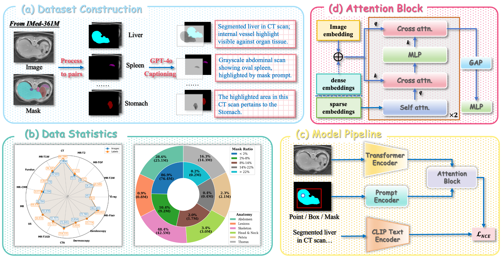

Multimodal Learning
Representation, alignment, reasoning, and adaptation across vision, language, and other modalities.
Sichuan University
Incoming M.Sc. student at LAMDA, Nanjing University in 2027.
Interested in learning systems that keep learning.
Open to internship and collaboration opportunities.
I am currently an undergraduate student at the School of Software Engineering, Sichuan University. I am also a student in the Honors Bachelor's Program (Shuren Class) at Wu Yuzhang Honors College. In 2027, I will join LAMDA, School of Artificial Intelligence, Nanjing University, as an M.Sc. student, working with Dr. Da-Wei Zhou.
My current interests lie at the intersection of multimodal learning, continual learning, and agentic AI. I am especially interested in how foundation models can acquire new knowledge over time, reason across heterogeneous modalities, and turn learned capabilities into reliable long-horizon behavior.
I have research experience in Medical AI, including region-aware medical vision-language modeling and multimodal medical reasoning. My work includes MedP-CLIP, published in Medical Image Analysis.
I am interested in building learning systems that can perceive across modalities, adapt continually, and act autonomously.
Representation, alignment, reasoning, and adaptation across vision, language, and other modalities.
Learning new knowledge and capabilities over time while retaining and reusing what has already been learned.
LLM-based agents that plan, use tools, accumulate experience, and improve through interaction with environments.
I also have research experience in Medical AI, including region-aware medical vision-language modeling and multimodal medical reasoning.
I accepted an offer to join LAMDA, Nanjing University, as an M.Sc. student in 2027.
MedP-CLIP was accepted by Medical Image Analysis.
I was selected for the Honors Bachelor's Program (Shuren Class) at Wu Yuzhang Honors College, Sichuan University.
